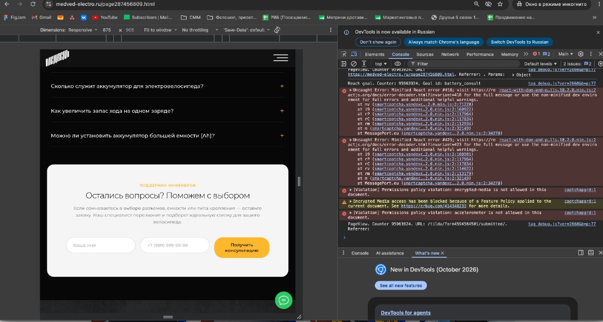
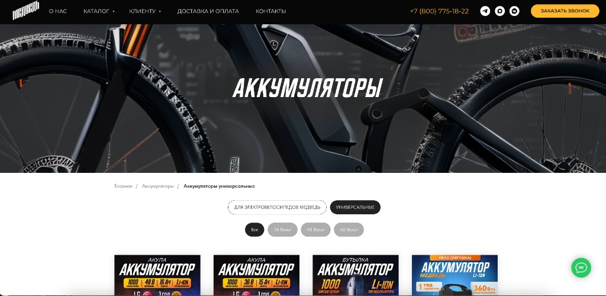
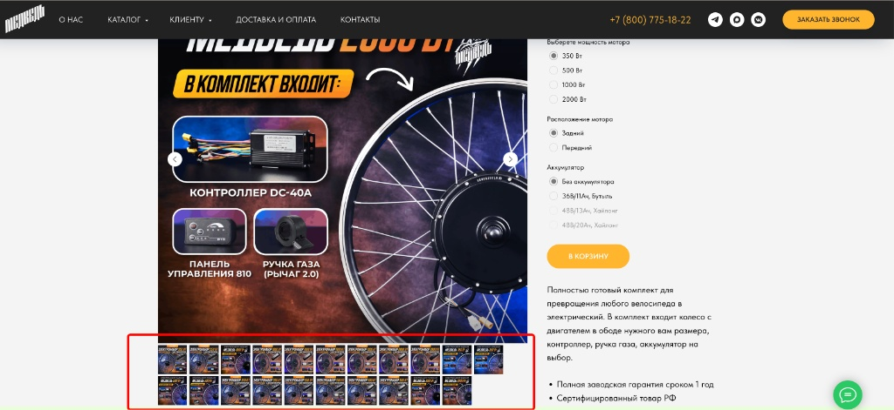
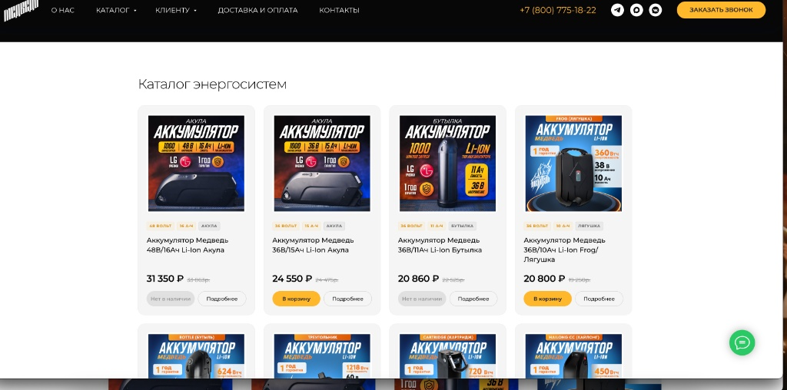
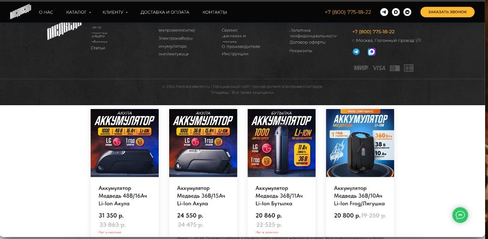
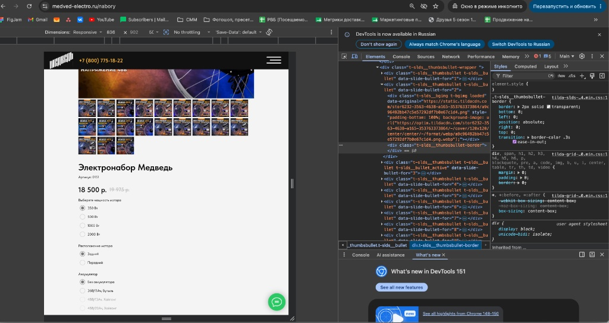
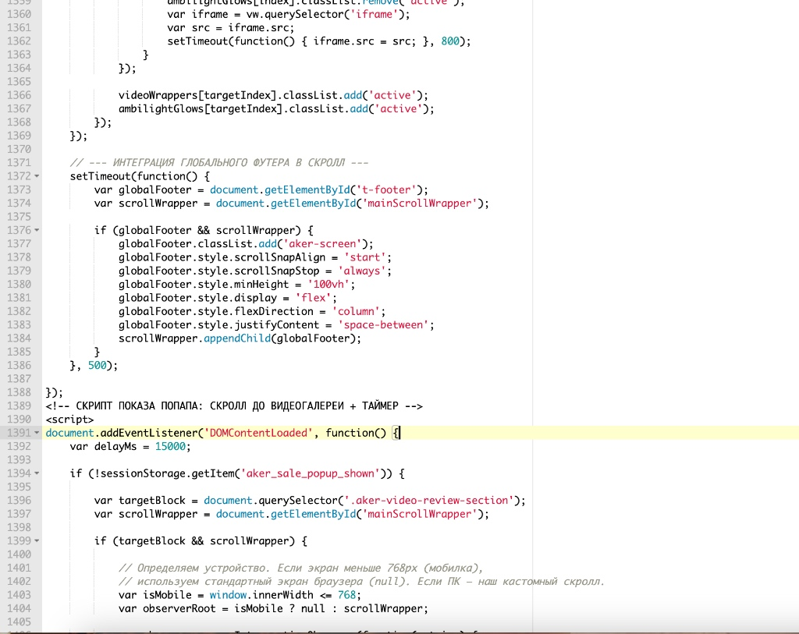
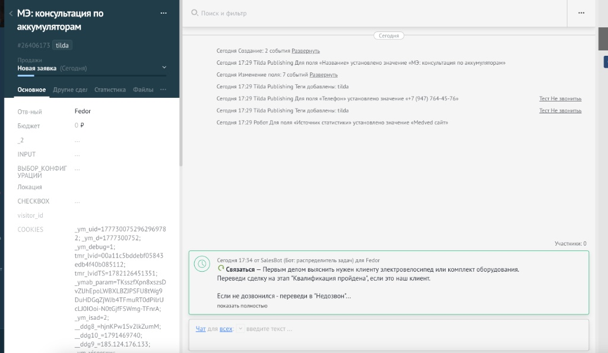

Переработка сайта «Медведь Электро»: глубокая кастомизация Tilda, Bento-каталог и рост конверсии в 2.8 раза
Стек & Технологии
Tilda Publishing, HTML5, CSS3 (.aker-theme), Vanilla JavaScript, IntersectionObserver API, MutationObserver, Chrome DevTools реверс-инжиниринг, amoCRM API, Яндекс Метрика
Ключевые результаты перезапуска
- Конверсия в заявку (CR)
- 3,9%
- Рост в 2,8 раза (до переработки — 1,4%)
- Отказы (Bounce Rate)
- 28,7%
- Снижение в 2,2 раза (было 64,3%)
- Время на сайте
- 02:18 мин
- +206% за счёт геймификации и интерактивных блоков
- Потери лидов в CRM
- 0%
- Устранён баг потери ~18% заявок из-за конфликта скриптов

Контекст и вызов проекта
Бренд «Медведь Электро» производит и собирает премиальные электрофэтбайки (флагманы «Медведь М2», «Медведь GT» с чеком до 690 000 ₽), а также высокотехнологичные Li-ion аккумуляторы с доставкой по всей России. Продукт сложный, технологичный и с высоким средним чеком.
Однако онлайн-витрина бренда работала на стандартных шаблонных блоках Tilda Publishing. Конструктор перестал отвечать требованиям премиального позиционирования: типовая верстка выглядела дёшево и шумно, мобильная адаптация сбоила, а стандартные формы сбора контактов ломались под нагрузкой. Перед нами стояла задача глубоко переработать сайт и посадочные страницы, не уходя со знакомой платформы, но преодолев все её системные ограничения.
Точка А: проблемы старого сайта («До»)
Аудит исходных страниц каталога и карточек товаров выявил 4 ключевых барьера для конверсии:
- Визуальный шум и хаос в каталоге: стандартный магазинный блок Тильды перегружал внимание. Карточки сливались, отсутствовали удобные фильтры по напряжению (36V / 48V / 60V) и форм-факторам аккумуляторов («Акула», «Сумка», «Лягушка»). Покупатель не мог с первого взгляда понять ключевые отличия.
- Ломаный UX в карточках товаров: на страницах электровелосипедов выводилась огромная системная лента миниатюр фотографий, которая отвлекала пользователя от сборки комплектации. Характеристики подавались скучной текстовой «простынёй», а белые шрифты Тильды самопроизвольно сливались со светлыми фонами.
- «Слепой» и агрессивный маркетинг: стандартные всплывающие окна скидок срабатывали в лоб по таймеру (через 15–60 секунд после входа). Пользователь ещё не успел ознакомиться с техникой, как ему перекрывали экран агрессивным поп-апом, что давало свыше 64% отказов (Bounce Rate).
- Хаос в amoCRM и потеря ~18% лидов: попытки подключить кастомные поля конфликтовали со скриптом
tilda-forms.jsна React. Валидаторы крашились, и часть заявок просто терялась в пути. А те заявки, что доходили, падали с безликим заголовкомLead from: medved-electro.ruбез передачиvisitor_uidи cookies, делая сквозную аналитику невозможной.


Этап 1. Редизайн Каталога: карточный Bento-стиль и теневое проксирование
Мы полностью переработали архитектуру каталога, отказавшись от стандартных шаблонов конструктора в пользу кастомного карточного Bento-стиля (.aker-theme), вдохновлённого лаконичной подачей Apple:
- Изоляция стилей через CSS-щит: все кастомные блоки обернули в изолированный контейнер с переопределением глобальных стилей Тильды (
!important), нейтрализовав стандартные синие кнопки и неаккуратные шрифтовые скачки платформы. - Быстрые фильтры по ключевым параметрам: внедрили переключатели по вольтажу (36V, 48V, 60V) и типу батареи («Акула», «В треугольник рамы», «Багажник»). Покупатель в один клик отсекает неподходящие модели.

Инженерный хак №1: Теневое проксирование каталога
Если создать карточки полностью на чистом HTML, ломается штатная логика корзины и оформления заказа Тильды. Чтобы сохранить нативную корзину, применили метод «теневого проксирования»:
// Скрываем стандартный блок каталога Тильды через системный атрибут
document.querySelectorAll('[data-record-type="754"]').forEach(el => {
el.style.display = 'none';
});
// При клике на кастомную кнопку «В корзину» эмулируем клик по системной кнопке Тильды
customBtn.addEventListener('click', (e) => {
e.preventDefault();
const tildaTargetBtn = document.querySelector(`[data-product-id="${targetId}"] .js-store-prod-btn`);
if (tildaTargetBtn) tildaTargetBtn.click();
});Результат: посетитель видит безупречный дизайнерский интерфейс, а заказ бесшовно попадает в штатную корзину интернет-магазина без единого бага.
Этап 2. Интерактивная геймификация «Заряди аккумулятор»
Для электротехнической тематики классическая форма «Оставьте телефон и получите каталог» работает всё хуже — пользователи устали от спама. Чтобы кардинально вовлечь холодный трафик, мы разработали интерактивную механику прямо на странице каталога:
- Физика свайпа и трения: пользователь должен пальцем на смартфоне (или курсором мыши) активно «тереть» батарею на экране для её зарядки.
- Визуальный и тактильный отклик: при трении летят электрические искры (генератор частиц Canvas/CSS), сегменты батареи поочерёдно загораются от красного к неоново-зелёному, а на смартфонах срабатывает виброотклик через
navigator.vibrate(). - Победный финал и конверсия: при достижении 100% заряда запускается салют, и появляется стильный поп-ап с персональным промокодом на 10% и кнопками прямого перехода в Telegram.


Эффект геймификации: среднее время пребывания на странице выросло на 206% (до 2 минут 18 секунд). Перевод клиентов в Telegram-чат позволил менеджерам мгновенно закрывать сделки, отправляя живые видео с производства и тестов батарей.
Этап 3. Реверс-инжиниринг карточки товара через DevTools
На детальных посадочных страницах электробайков стандартный движок Тильды упорно конфликтовал с кастомным CSS: перекрашивал текст в белый цвет на светлом фоне и упорно не позволял скрыть системную галерею превью-слайдов.
Через панель Elements и Styles Chrome DevTools мы провели реверс-инжиниринг поведения магазина Тильды:
- Выяснили, что контейнер миниатюр в данном шаблоне именуется не стандартным
.t-slds__thumbsbox, а скрытым классом.t-slds__thumbsbullet-wrapper. - Внедрили точечный оверрайд, скрыв отвлекающую полосу превьюшек и перекрасив хлебные крошки и меню в фирменный тёмный графит.
- Пересобрали скучный блок описания в лаконичные карточки выбора комплектации рамы и мощности мотора.


Этап 4. Поведенческий триггерный лендинг «Медведь М2»
Для флагманского фэтбайка «Медведь М2» требовался формат интерактивной презентации. Мы внедрили кинематографичный движок прокрутки с механикой scroll-snap: каждый ключевой смысловой экран (видеопрезентация, детали рамы, конфигуратор цен) плавно фиксируется по центру экрана.
Вместо навязчивого поп-апа по таймеру применили поведенческую логику на базе IntersectionObserver API: всплывающее окно спецпредложения срабатывает строго тогда, когда пользователь доскроллил до блока цен / видеогалереи и провел там не менее 15 секунд. Предложение появляется в момент максимального осознанного интереса, что снизило показатель отказов до рекордных 28,7%.

Этап 5. Безотказная интеграция с amoCRM и сквозная аналитика
В премиальном e-commerce потеря заявки равна потере десятков тысяч рублей маржи. Стандартные кастомные формы в Tilda регулярно крашили скрипт tilda-forms.js на React, из-за чего до 18% лидов не отправлялись.
Инженерный хак №2: Глубокая эмуляция ввода без конфликта с React
Мы решили конфликт через создание скрытой формы Тильды со смещением за пределы экрана (left: -9999px, не display: none, чтобы React-валидаторы и капча смогли штатно инициализироваться). Написали JS-мост, передающий значения с ручной генерацией событий ввода:
// Перенос данных из кастомной формы в скрытую форму Тильды с триггером событий React
hiddenInput.value = customInput.value;
hiddenInput.dispatchEvent(new Event('input', { bubbles: true }));
hiddenInput.dispatchEvent(new Event('change', { bubbles: true }));
// Гарантированная передача visitor_uid и cookies для сквозной аналитики
document.querySelector('input[name="visitor_uid"]').value = window.visitorId || getCookie('_ym_uid');
_ym_uid, tmr_lvid) и параметра visitor_uid для прозрачной сквозной аналитики от рекламы до кассы.
Итог: брак и потери заявок упали до 0%. Каждый лид попадает в amoCRM с прозрачным тегом (например, МЭ: консультация по аккумуляторам или МЭ: М2 предзаказ) и полной цепочкой UTM-меток рекламного клика.
Сводные данные: результаты «До / После»
| Метрика | До оптимизации | После оптимизации | Динамика |
|---|---|---|---|
| Конверсия в заявку (CR) | 1,4% (слабый поток, типовые формы) | 3,9% (Bento-карточки + геймификация) | Рост в 2,8 раза |
| Показатель отказов (Bounce Rate) | 64,3% (агрессивные поп-апы в лоб) | 28,7% (умные триггеры по скроллу) | Снижение в 2,2 раза |
| Среднее время на сайте | 00:45 мин | 02:18 мин | +206% вовлечения |
| Потери лидов (брак скриптов) | ~18% (конфликт React в Tilda) | 0% (эмуляция ввода и скрытый мост) | Устранено полностью |
| Стоимость лида (CPL) | 1 150 ₽ | 410 ₽ | Снижение на 64% |
| Лиды через мессенджеры | < 5% | ~40% (быстрый переход в Telegram) | Рост в 8 раз |
Связка с контекстной рекламой и главный вывод
Переработка посадочных страниц и каталога стала фундаментом для перезапуска рекламы в Яндекс Директе (подробный разбор очистки трафика — в кейсе по оптимизации Директа «Медведь Электро»). Когда рекламный трафик ведёт на страницу с высокой конверсией, прозрачными фильтрами и безотказной CRM-интеграцией, стоимость привлечения клиента падает в разы.
Главный вывод
Конструктор сайтов — это не приговор. При грамотном сочетании инженерного реверс-инжиниринга (теневое проксирование, обход спам-фильтров через эмуляцию событий) и нешаблонного продуктового маркетинга (Bento-сетка, интерактивная геймификация с тактильным откликом) Tilda способна конвертировать холодный трафик на уровне кастомных React-приложений с минимальными затратами на разработку.